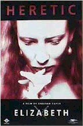

Contents | Features | Reviews | News | Archives | Store |
 |
|
| Movie Credits | Buy It! |
Elizabeth
Review by Elias Savada
Posted 13 November 1998
|  | Directed by Shekhar Kapur. Starring
Cate Blanchett, Geoffrey Rush, Written by Michael Hurst. |
The Western debut for Indian director Shekhar Kapur (Bandit Queen) is a grand visual delight and liberating sixteenth century costume tale of the rise to power of young Queen Elizabeth I, semi-illegitimate daughter of King Henry VIII and Anne Boleyn, following the death of Elizabeth’s fiercely Catholic half-sister Mary. Australian actress Cate Blanchett probably plays the role a little too much as modern working girl rather than as a rousing regal figure, but she does sprinkle dashes of curry on the tails of the male-dominated ruling class as she struggles to cope with the French, the Spanish, the church, a large room of angry bishops, and traitors from within. Goodness, gracious, what’s a poor queen to do!
Darkly and effectively lit by cinematographer Remi Aderfarasin and lushly illustrated by production designer John Myhre and costume designer Alexandra Byrne, the story begins in 1554 as the beguiling Protestant Queen-to-bee, a carefree sort, is at play in the fields of the dashing Lord Robert Dudley (Joseph Fiennes, also appearing in the Elizabethan Christmas release Shakespeare in Love). The dying Mary (Kathy Burke), on poor advice from her counselors -- there’s a lot of that in this film -- imprisons the red-haired and radiantly innocent teenager, (plucked from the edge of losing her virginity, no less) in the nasty Tower of London. Charged with conspiracy and treason, the steadfast Elizabeth refuses to "confess" to uphold the Catholic faith and, with her ladies in waiting by her side, survives the ordeal. Thirty minutes in, Mary dies, leaving Elizabeth to inherit the throne and a royal ton of trouble. Taking a hands-on approach, she finds her kingdom in financial ruin, her army in disarray, and, just what you need when you start a new job, your "loyal" advisors push her to select a royal alliance and bear an heir (i.e., get cooking mama). Forced into numerous bad decisions (particularly about the invasion of Scotland) by some of the good-ole-boys that want their agenda followed, Elizabeth turns up the dramatic heat with some careful coaching and royal intrigue which eventually lands her in the British hall of fame, establishing a foothold that would last nearly half a century.
Because of her religious affiliation, Mary must ride the wave between the sympathetic Protestants, the devious Duke of Norfolk (Christopher Eccleston doing a good Sheriff of Nottingham impersonation), Fanny Ardant as battle-happy Mary of Guise (doing a marvelous wicked bitch of the west) and Pope Pious V (John Gielgud in a role but a blink long), who proclaims her a heretic and frees the English Catholic community from paying her liege. Seemingly on her side are the crafty Sir Francis Walsingham (fellow Aussie Geoffrey "Shine" Rush) returned from exile, Sir William Cecil (Richard Attenborough) who accepts her confessional, and her bedmate, the aforementioned Lord Dudley. The fluff faction is headed by Duc d’Anjou (Vincent Cassel), France’s fey suitor for the queen’s hand.
Over the two-hour ride, Kapur provides first-class accommodations, and the acting is true to the characters. The only problem is that some of the lesser figures get lost in the largeness of the set pieces and the historical duplicity as defined in Michael Hirst’s script. You almost need a scorecard so you don’t get dizzy comprehending all that narrative stuck within this feature-length soap opera. Blanchett, tarnished in the critically and commercially unsuccessful Oscar and Lucinda, shines here in a role that she seemed destined to play. Maybe her Lucinda didn’t sit well with the critics, but she might get (an) Oscar after all. I didn’t like that earlier effort (even nicknaming it The Australian Patient), and director Anthony Minghella (who helmed The English Patient) is coincidentally directing Blanchett in the forthcoming black comedy Pushing Tin with Billy Bob Thornton and John Cusack.
The visceral manner in which director Kapur deals with his oversized production could very well move him up to the A list in directing any contemporary drama about a certain former White House intern based on the castle collusion he bares in Elizabeth. There are many memorable moments here -- a river of dead soldiers, an exuberant masquerade spectacle, and the queen’s discovery of her French wooer in puffery regal drag partying elsewhere in her castle.
If Blanchett were a better known actress, the film would have been heralded as Cate Blanchett IS Elizabeth. It is her movie to own and she does so magnificently. One of the more intelligently drawn roles of the year, and she’s also nearly as sexy dancing a volta as Catherine Zeta-Jones’s sultry tango ignited audiences in this summer’s The Mask of Zorro. The Virgin Queen may be dead, but Cate Blanchett definitely and unmistakably rules in Elizabeth. Long live the queen!
Contents | Features | Reviews | News | Archives | Store
Copyright © 1999 by Nitrate Productions, Inc. All Rights Reserved.